Clase 5: Energía Interna, Capacidades Caloríficas y Entalpía
De la primera ley cíclica nace $U$ como función de estado; midiendo a volumen constante aparece $C_V$, el experimento de Joule mata la dependencia con $V$, y trabajar a presión constante obliga a inventar la entalpía.
Temas que cubre
- Enunciado cíclico de la primera ley: $\oint \bar\delta W = \oint \bar\delta Q$
- Definición de la energía interna $U$ a partir de que $\oint(\bar\delta Q - \bar\delta W) = 0$
- $U$ como función de estado extensiva, sin valor absoluto
- $U = U(T,V)$ y su diferencial total en un sistema de masa fija
- Procesos a volumen constante: $Q_V = \Delta U$ y definición de $C_V$
- Capacidad calórica molar como propiedad intensiva tabulada
- Experimento de Joule: expansión libre contra el vacío y medición de $(\partial U/\partial V)_T$
- Ley de Joule $U = U(T)$: exacta para gas ideal, aproximada para gases reales
- Procesos a presión constante: aparición natural de $H \equiv U + PV$
- $\Delta H = Q_P$, entalpías de vaporización y fusión, definición de $C_P$
Conceptos clave
Cómo nace $U$
La primera ley se enuncia para ciclos: el trabajo producido en el entorno iguala al calor que fluye desde él. Eso significa $\oint(\bar\delta Q - \bar\delta W) = 0$, y una cantidad cuya integral cíclica se anula define una función de estado. A esa función se le llama $U$.
$U$ no tiene valor absoluto
La primera ley sólo fija diferencias de energía. $U$ es además extensiva: escala con la cantidad de materia. Todo lo que se mide y tabula son $\Delta U$ respecto de un estado de referencia.
Por qué $C_V$
A volumen constante $\bar\delta W = 0$, así que $Q_V = \Delta U$ directamente. Definir $C_V \equiv (\partial U/\partial T)_V$ convierte la variación de energía interna — abstracta — en algo medible con un calorímetro.
Experimento de Joule
Expansión libre contra el vacío en un recipiente aislado: $\bar\delta W = 0$ (no hay contra qué empujar) y $\bar\delta Q = 0$ (no se observó cambio de $T$), luego $dU = 0$ con $dV \neq 0$. Conclusión: $(\partial U/\partial V)_T = 0$.
Ley de Joule
$U = U(T)$: la energía interna del gas depende sólo de la temperatura. Es exacta para el gas ideal. En gases reales $(\partial U/\partial V)_T$ es pequeña y positiva; en líquidos y sólidos no es nula, pero como $dV$ es minúsculo, su contribución igual se desprecia.
Por qué se inventa $H$
A $P$ constante el sistema gasta parte del calor en trabajo de expansión, así que $Q_P \neq \Delta U$. Al reordenar la primera ley aparece sola la combinación $U + PV$, que es función de estado por serlo sus tres factores. Definirla como $H$ hace que $Q_P = \Delta H$.
Fórmulas fundamentales







Qué hay que entender
- $\Delta U = Q - W$ con el convenio de este curso. Si un enunciado de otro libro dice $\Delta U = Q + W$, está usando $W$ como trabajo sobre el sistema: no son ecuaciones distintas, es el mismo contenido con signo cambiado.
- $U$ y $H$ son funciones de estado; $Q$ y $W$ no. Pero bajo restricciones concretas se igualan: $Q_V = \Delta U$ y $Q_P = \Delta H$. Esas dos igualdades son las que hacen medible toda la termodinámica.
- $H$ no es "otra energía": es una combinación conveniente. Se define porque casi todos los experimentos de laboratorio ocurren a presión atmosférica constante, no a volumen constante.
- La ley de Joule ($U$ depende sólo de $T$) es exacta sólo para gases ideales. Es el supuesto que hace colapsar la mitad de los términos en los ejercicios.
- $\Delta U = C_V\Delta T$ vale para gas ideal en cualquier proceso, no sólo a volumen constante — porque $U$ depende sólo de $T$. Lo mismo con $\Delta H = C_P\Delta T$. Es un atajo que se usa constantemente.
- Mayor $C_V$ significa mayor capacidad de absorber calor sin subir de temperatura.